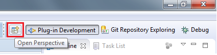
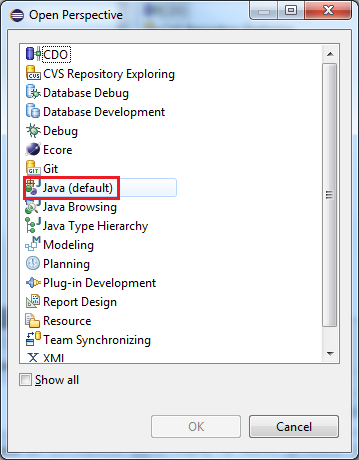
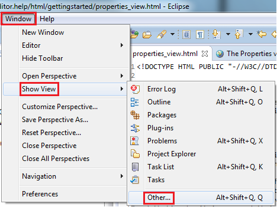
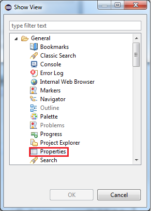
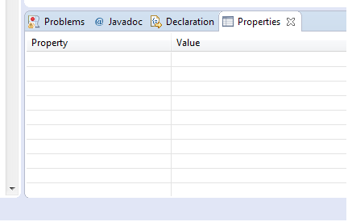

Properties view
The standard Eclipse Properties view is used by the Eclipse CA IDMS/DB Schema Diagram Editor to show
you some useful information for the currently selected item in your diagram.
The Eclipse workbench provides different perspectives. A perspective is a collection of views that
are often used together in order to perform a specific task. The Java perspective is an example of
a perspective that is targeted towards Java programmers. It is also Eclipse's default perspective
and that's why it is assumed that you work in the Java perspective. One thing that, unfortunately,
is missing in the Java perspective is the Properties view.
The active perspective is always shown in the top right area of the workbench window. If the Java
perspective is not active, you can activate it by pressing the perspective selection button and then
selecting the Java perspective:

Pressing the above button will open the "Open Perspective" dialog; select the Java perspective:

The Java perspective is now active. To open the Properties view, select the "Show View"/"Other"
menu item in the "Window" menu:

Note that the number of items you see in your "Show View" menu can be different from the image
above. Select the Properties view in the "Show View" dialog and press the OK button:

The Properties view should now be visible and is (probably) available at the bottom of your
workbench window:
